26 charts and two 11-panel dashboards
bar-A-hc line-A-hc
line-A-hc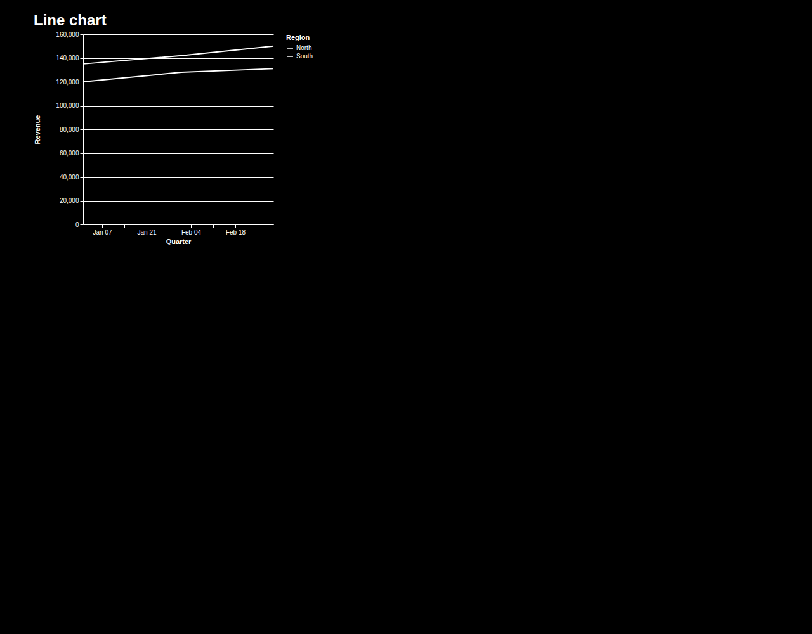
area-A-hc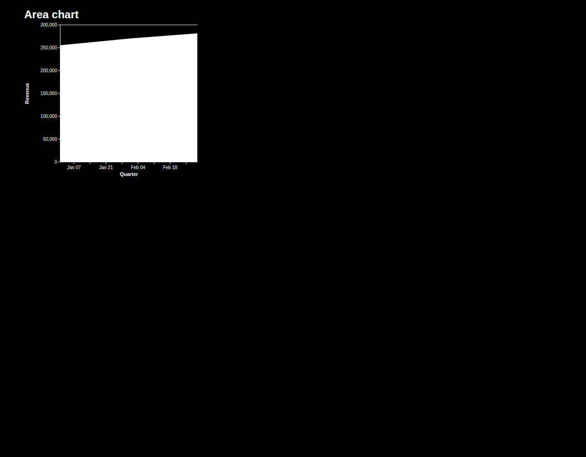
scatter-A-hc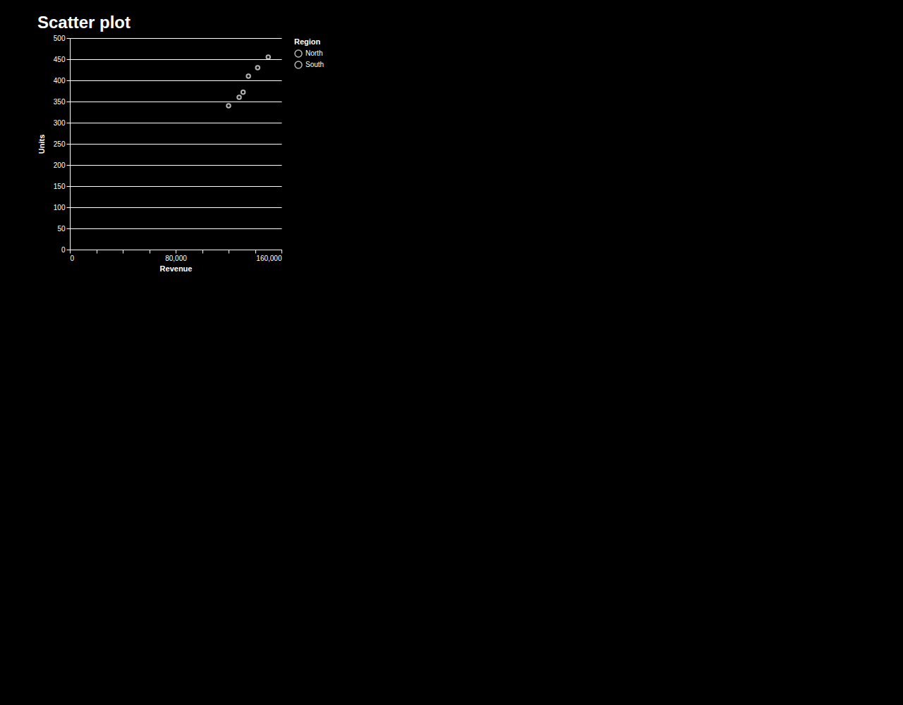
heatmap-A-hc treemap-A-hc
treemap-A-hc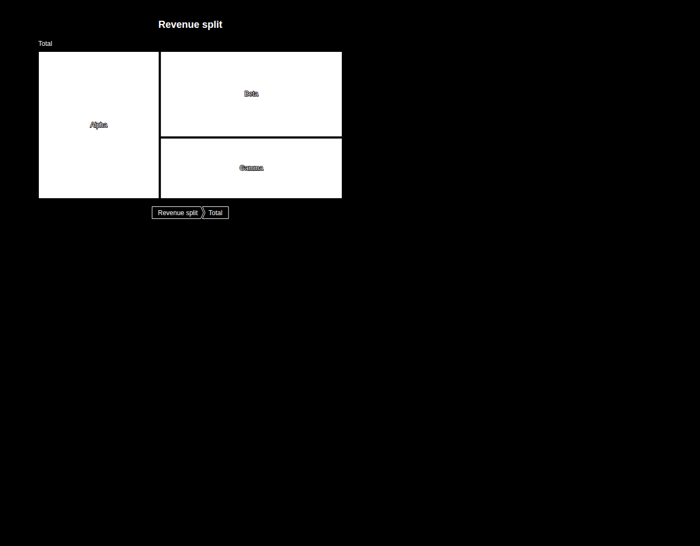
sunburst-A-hc sankey-A-hc
sankey-A-hc chord-A-hc
chord-A-hc force_graph-A-hcchoropleth-A-hc
force_graph-A-hcchoropleth-A-hc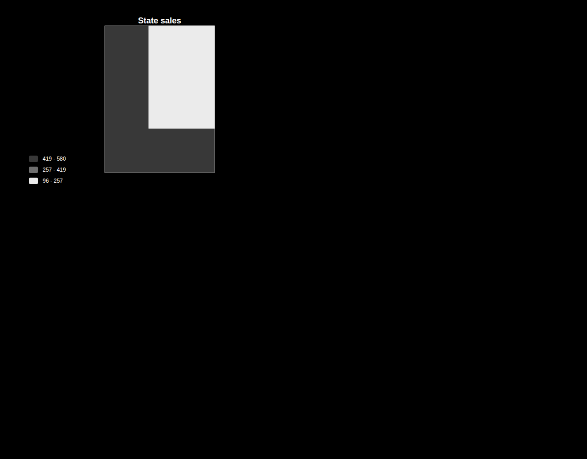
bubble_map-A-hc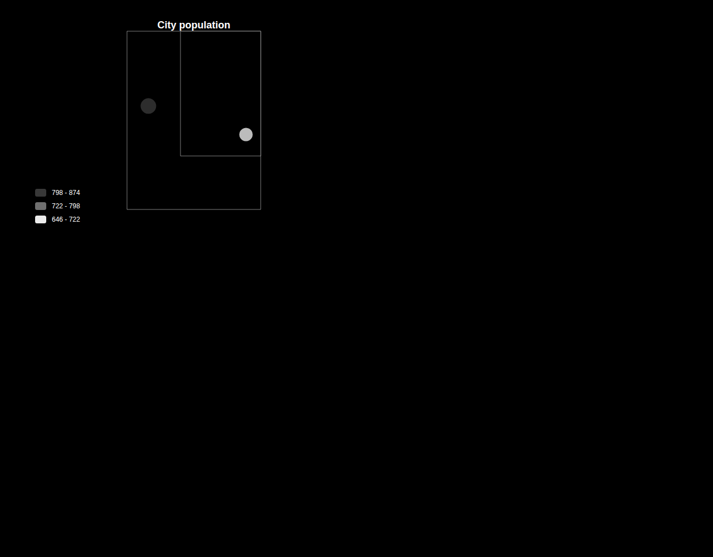
flow_map-A-hc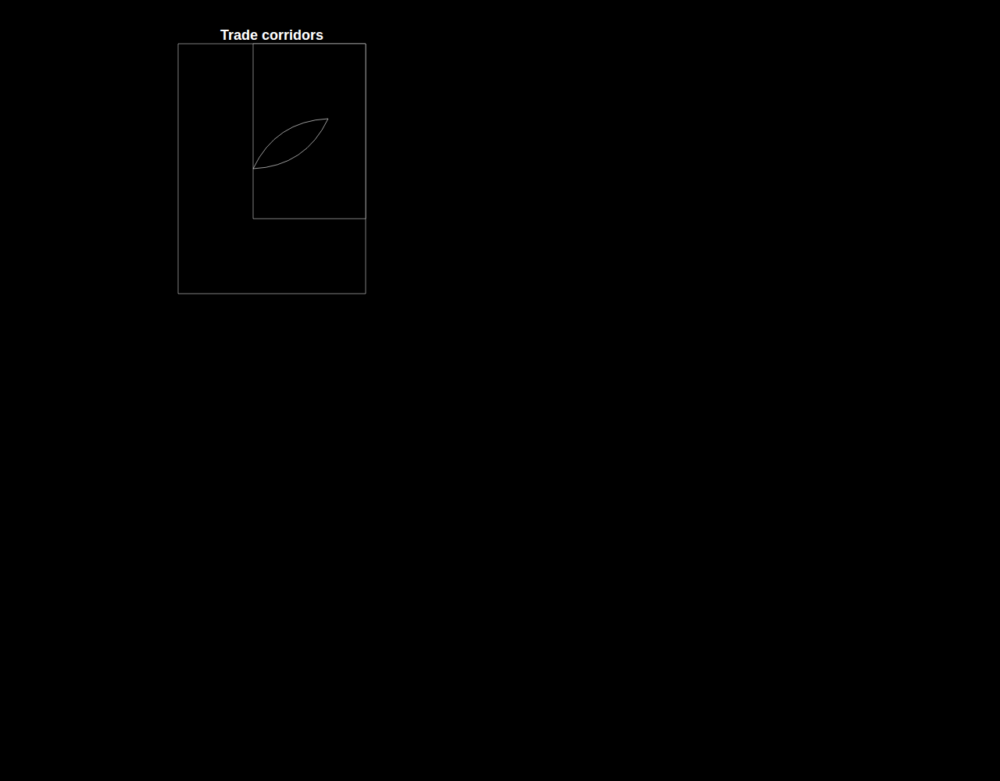
dashboard-A-hc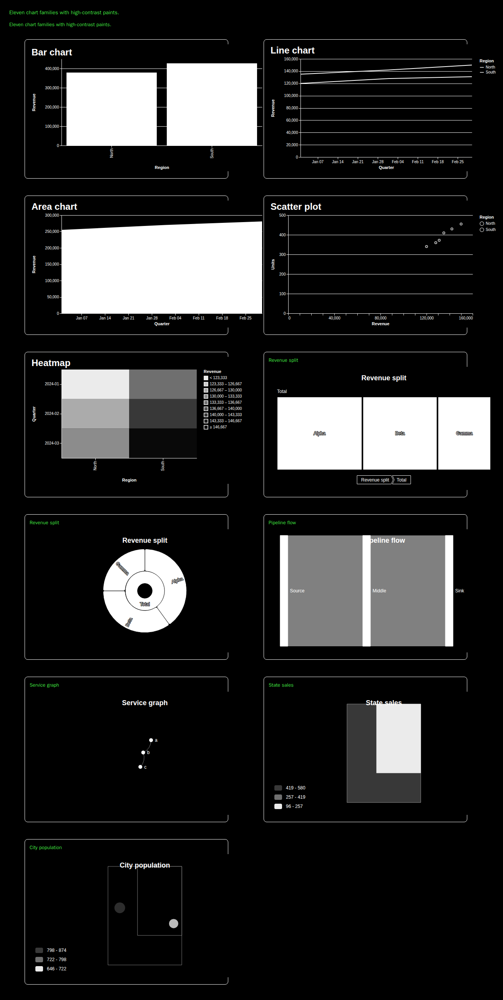
bar-B-hc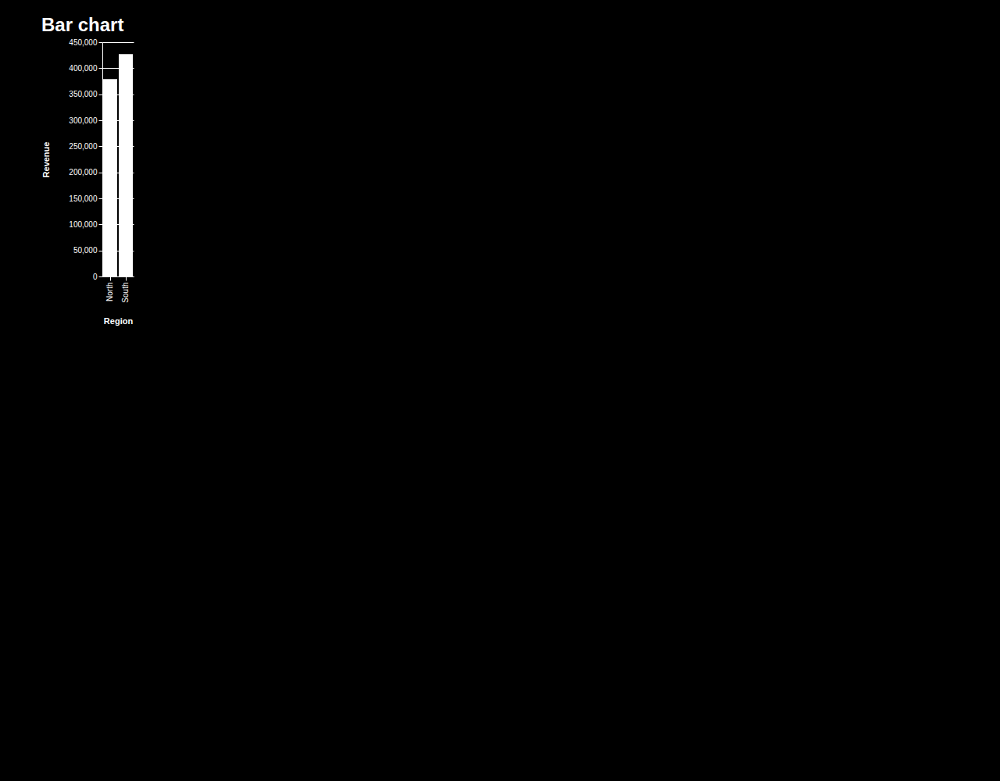
line-B-hc area-B-hc
area-B-hc scatter-B-hc
scatter-B-hc heatmap-B-hctreemap-B-hc
heatmap-B-hctreemap-B-hc sunburst-B-hc
sunburst-B-hc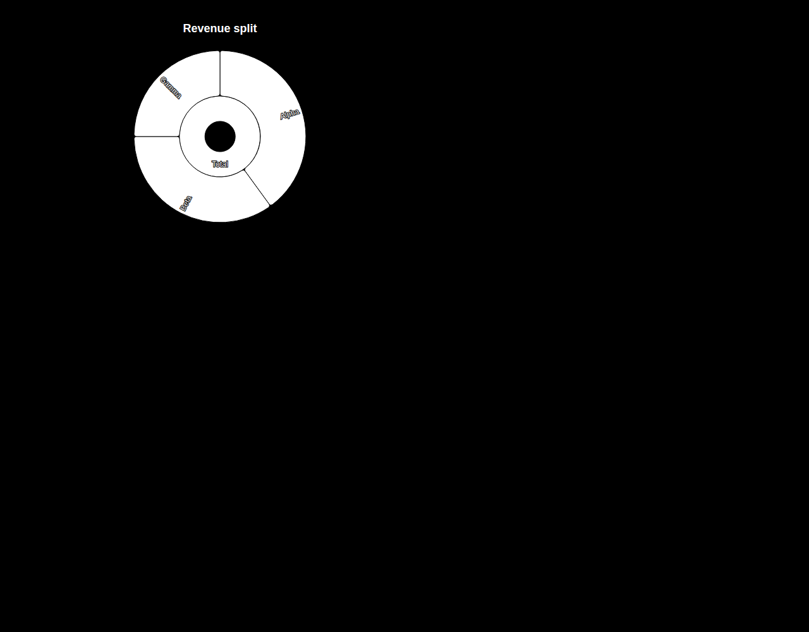
sankey-B-hc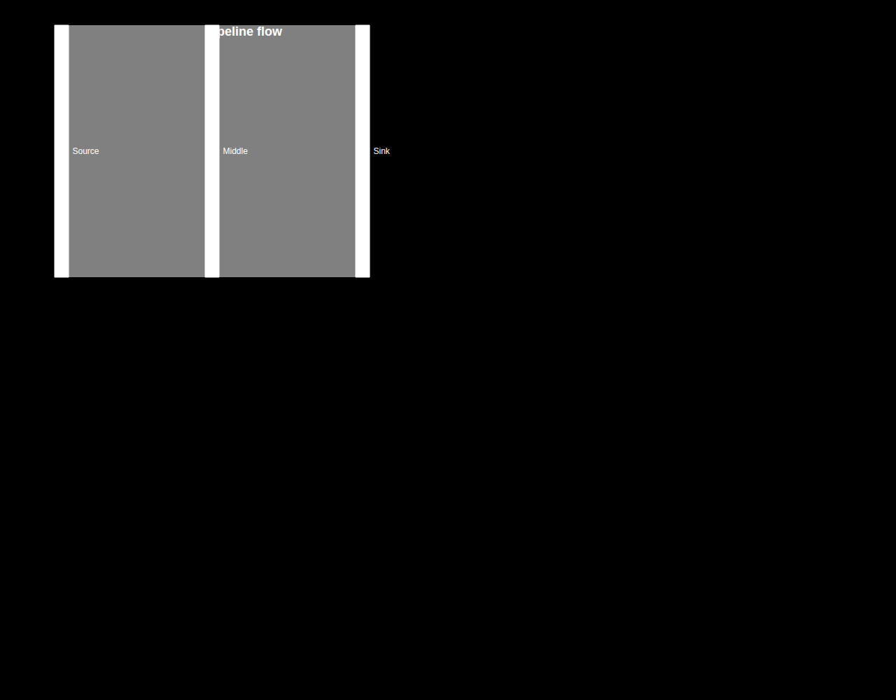
chord-B-hc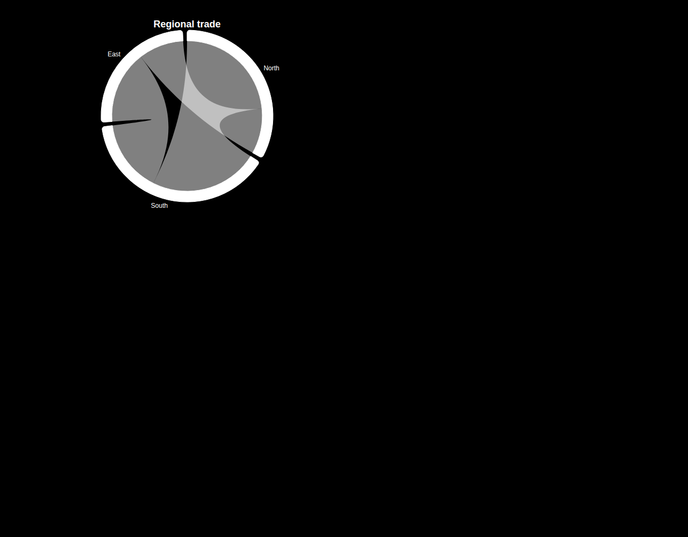
force_graph-B-hc choropleth-B-hc
choropleth-B-hc bubble_map-B-hc
bubble_map-B-hc flow_map-B-hc
flow_map-B-hc dashboard-B-hc
dashboard-B-hc